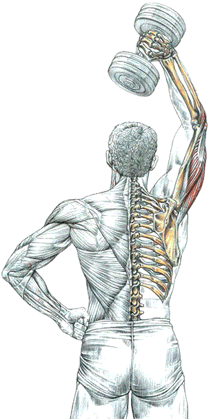

Разгибание одной руки с гантелью из-за головы

Техника выполнения
Стоя или сидя. Гантель держать в одной руке, поднятой вертикально вверх:
- сделать вдох и согнуть руку в локте, опустив гантель за шею;
- по окончанию движения сделать выдох.
В процессе движения особое внимание обратите на сокращение длинной головки трицепса, которая сокращается, напрягаясь в разогнутом вертикальном положении руки.
Важно держать в напряжении мышцы живота, чтобы не слишком выгибать поясницу, или по возможности использовать скамью с короткой спинкой для опоры.
источник: "Анатомия силовых упражнений." Фредерик Делавье